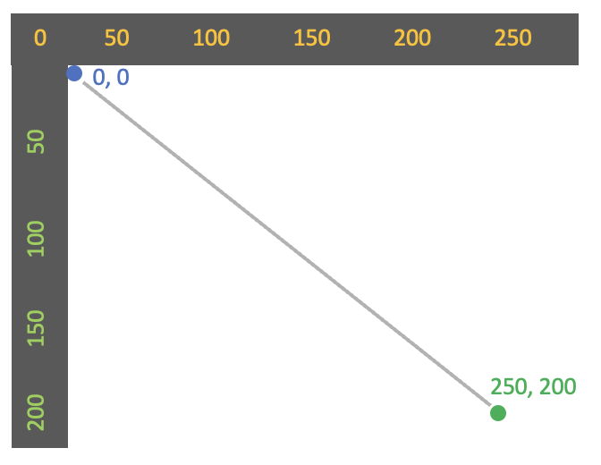

There are 4 arguments in the line command.
It's helpful to think of them in two pairs.

In this lesson, you'll learn how to draw lines and how to make beautiful spinning shapes.


Tinker
Click ▶Play. You'll see
a line from the top left to the bottom right corner of the canvas.
In the code, there's a new line command. Let's explore it.
Try these challenges:
Change just the first argument in the line command
to a number between 0 and 200.
Then click ▶Play. Try a few different numbers,
clicking ▶Play after each change, until you
have a good sense of what the first argument does.
Use the same technique to explore
each of the other 3 arguments in the line command.
Make changes, one at a time, until you can predict what will happen
before you click ▶Play!
Tinker
Click ▶Play. You'll see
a different line.
Try these challenges:
Change one number in the line
command to make the line longer. Be sure to click ▶Play
to see the change.
Change two numbers in the line
command so that the line is lower on screen but still
points straight across. Be sure to click ▶Play.
Change the line
command so that the line goes straight up and down.
Be sure to click ▶Play.
Tinker
Click ▶Play.
You'll see a line with an empty ellipse at its end.
Try this challenge:
Find the new rotate
command. Change its argument from 0 to 1
and then click ▶Play.
What happens?
Change the number again, this time to a small decimal
like 0.3. Then click ▶Play.
Try some other small decimals, too. Use
numbers that are less than 1.5 to ensure that the
line doesn't rotate so far that it moves off screen.
Tinker
Click ▶Play.
You'll see the line and with a small ellipse rotating endlessly.
Try this challenge:
Change the rotation so that the lines are a little further apart.
Make the lines rotate in the opposite direction.
Tinker
Click ▶Play.
You'll see that the line and ellipse again, but the line begins at the center of the screen.
There's also a new command called translate.
The command translate moves the
point (0, 0) to a different location on canvas!
In this example, we've used translate(125, 100) to
move 0, 0 to the center of the canvas,
exactly 125 pixels across and 100 pixels down from where it was before.
Let's investigate how translate works.
Try these challenges:
In the translate command, change the first argument to
any number between 0 and 200, for now.
Click ▶Play.
What happens?
Change the second argument within the translate command.
Then click ▶Play.
What happens?
Tinker
Click ▶Play.
You'll see the line and ellipse rotating around the center of the screen endlessly.
By using translate, we moved the rotating image to a convenient location
where we can see all of it.
Try these challenges:
Change the script so that the rotating lines are further apart.
Change that same number again a few times, clicking ▶Play
after each change. What numbers create interesting images?
Change the script so that the
line and ellipse rotate in the opposite direction.
Tinker
Click ▶Play.
The line and ellipse stop rotating after awhile.
Try these challenges:
Find the the command that stops the rotation.
Change the number in this command and then click ▶Play
to stop the animation at different points.
Tinker
To make and save your own project, you'll work in the p5.js Web Editor. Click this link to open the p5.js Web Editor in another tab. A new project opens. If you haven't already signed into the p5.js Web Editor, do so now. Select all the code and press Delete or Backspace to delete it. Then paste the code you copied. Rename the project "Spins," or something similar. You can copy and paste one of the code examples below to use as a starter project or simply use the examples as a reference for making a completely new project of your own. Each example creates one of the images shown at the beginning of this lesson. Have fun! üëè
Example #1 — Spinning Circles
For this project, see the first GIF image at the beginning of this lesson.
The starter code below shows a single red ellipse.
You must make it spin and change colors.
You can also make it stop after awhile, if you wish.
The project includes all the variables you'll need.
Use the variable r to change the rotation
and the variable hue to change the hue.
/* *** SPINNING CIRCLES *** */
let r = 0;
let hue = 0;
function setup() {
createCanvas(400, 400);
colorMode(HSB);
background(0, 100, 0);
}
function draw() {
translate(200, 200);
rotate(r);
noFill();
stroke(0, 100, 100)
ellipse(50, 0, 100, 100);
}
Example #2 — Lace
For this project, see the second GIF image at the beginning of this lesson.
The project includes the variable r.
Use it to change the rotation. You don't need any other variables.
/* *** LACE *** */
let r = 0;
function setup() {
createCanvas(400, 400);
colorMode(HSB);
background(0, 100, 0);
}
function draw() {
translate(200, 200);
rotate(r);
stroke(195, 100, 100);
line(-200, 0, 150, -150);
line(-200, 0, 120, 50);
}
Example #3 — Sun
For this project, see the third GIF image at the beginning of this lesson.
The starter code below shows a yellow ellipse that's long and flat,
with a horizontal line going through its center.
You must make both shapes spin and change transparency.
The project includes all the variables you'll need.
Use the variable r to change the rotation
and the variable t to change transparency in both the
fill and stroke commands.
/* *** SUN *** */
let r = 0;
let t = 0;
function setup() {
createCanvas(400, 400);
colorMode(HSB);
background(0, 100, 0);
}
function draw() {
translate(200, 200);
rotate(r);
stroke(51, 100, 100, 1);
line(-300, 0, 300, 0);
fill(51, 100, 100, 1);
ellipse(0, 0, 200, 8);
}